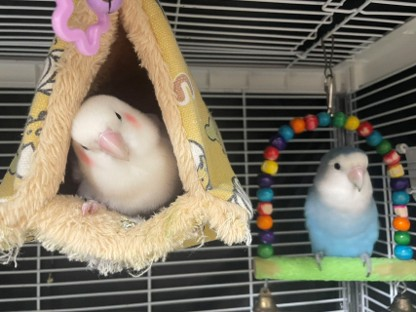

科学 · 温柔 · 靠谱的鹦鹉饲养知识库了解它们的性格、饮食与日常，让陪伴更长久
珊瑚蓝和尚鹦鹉，2.5个月开口叫"妈妈"，1.5岁已掌握100+词汇。温柔粘人，聪明伶俐，是中小型鹦鹉中的人气"网红亲人鸟"。
金冠百趴玄凤鹦鹉，会说"你好""拜拜""恭喜发财"，会吹口哨唱《幸福拍手歌》。温柔胆小，极度亲人，是无数养鸟人心中的"治愈小鸟"。
平安♥喜乐，两只甜蜜的牡丹鹦鹉（爱情鸟），生下了六只可爱的宝宝。活泼治愈，互动感强，自带浪漫的"爱情鸟"寓意。
